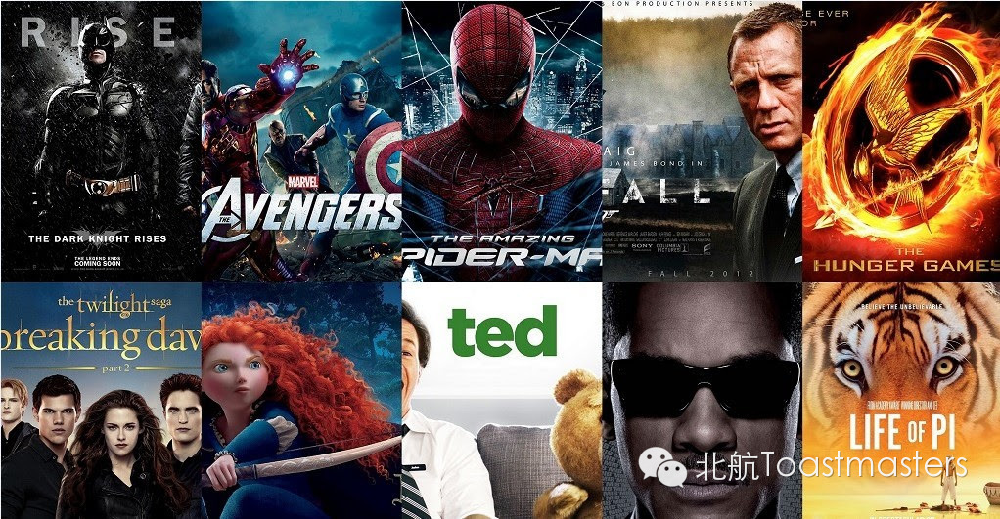

Movies
Time: 19:30-21:30, Friday, Nov. 7th
Venue: Room A209, New Main Building, Beihang University

Toastmaster: Grace
Table Topic Master: Jack
Yay！Beihang Toastmasters is coming again! Tonight we’ll present you a fantastic and colorful world—the world of movies! I always believe that watching movies is a wonderful way to enrich your experience, to bring out your emotion, and to drive you to think. When watching a movie, you are engaged into amazing stories of those heroes. Do you like the movie Titanic, a romantic story stealing the tears of tens of thousands of girls? And how about the movie The Lord of the Rings? A world full of mysteries and excitements that keep you trying to explore? If you do, and if you are big fans of movies, come here and join us in the 77th Beihang Toastmasters to share your ideas with us! Our Table Topic Master, humorous and romantic Jack, will be right here waiting for you to join us!
Prepared Speech
Social Nightmare
CC8 Keven
When we were kids, we used to think that the world was a paradise full of peace and joy, but now we know that there are also wars, poverties, terrorism and many other nightmares which will influence the world in a negative way. But what is the social nightmare? What brings the social nightmare? Just come and listen to our experienced speaker Keven to share his thoughts!
Lecture
Question Matters
Deron
When was the last time you asked a question? When was the last time you thought about asking a question? It seems that we are very easily to get used to the environment we are living in. As long as we find a comfort zone, we start to take everything for granted and stop thinking. Descartes once said, “I doubt, therefore I think; I think, therefore I am.” And today our handsome speaker Deron will say, “Question matters”. Now let’s welcome Deron to share his ideas with us.
Map
Attention! Our meeting room changed BACK to Room A209, New Main Building, Beihang University (北航新主楼A209房间). And you can phone to Deron for help.
TEL: 180-0125-3933

https://mp.weixin.qq.com/s/RWtiz7QP5P6rQimNieoLtQ
本页为抢救式本地归档，图文已永久保存。